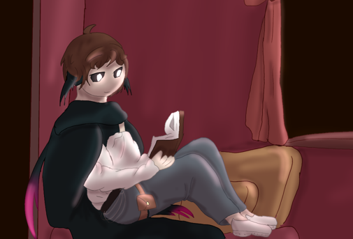

about me
I am Milan, born 2nd of march 2009 i am an iCT student at HZ university of applied sciences. born in Bergen op Zoom, I moved to Halsteren when i was about 12 and its where I still live. My parents would describe me as an energetic boy that if he wants something, he will be determined to get it. I like helping people where I can
My hobbies:
- Coding obviously!
- gaming
- theatre
- games like D&D and magic the gathering
Fun Fact!

if you look at most of my social accounts, including my github, you will see this picture, a fun fact about this picture is that it's drawn by a close friend of mine. I liked it so much that I like to put it as my profile picture.